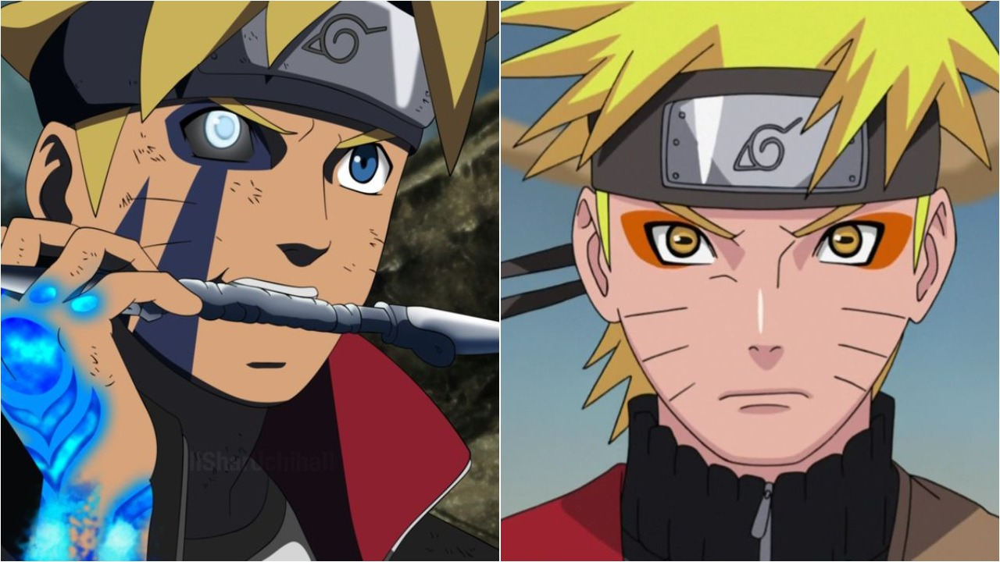
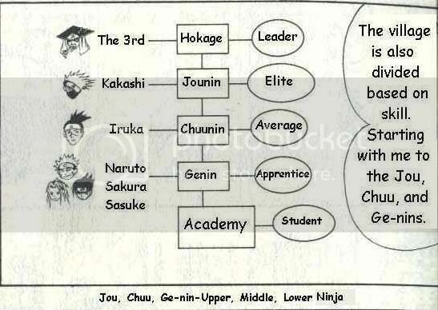
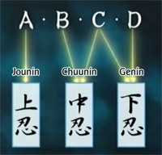

For original information click the open bar and click more information
☰ openPlease select a color for your text:
To apply the changes, select the Change button:
The world of Naruto is a world that is full of action and adventures beyond the imagination.
Naruto description

Twelve years before the start of the series, the Nine-Tails attacked Konohagakure destroying much of the village and taking many lives. The leader of the village, the Fourth Hokage, sacrificed his life to seal the Nine-Tails into a newborn, Naruto Uzumaki. Orphaned by the attack, Naruto was shunned by the villagers, who out of fear and anger, viewed him as the Nine-Tails itself. Though the Third Hokage outlawed speaking about anything related to the Nine-Tails, the children — taking their cues from their parents — inherited the same animosity towards Naruto. In his thirst to be acknowledged, Naruto vowed he would one day become the greatest Hokage the village had ever seen.
Rankings

Main Rankings
Academy students - (忍者学校生, Akademī-sei) make up the student body of the Academy, where they are trained and prepared for life as a shinobi. They are not an actual part of the shinobi force, as they are still in the process of mastering the very basics of the ninja lifestyle. However, they can be conscripted as part of the war potential in times of emergency.
Genin - (下忍, literally meaning: low ninja, meaning (Viz): junior ninja) are the lowest level of ninja and also the ones that display the most difference in power. When they become genin, ninja start to do their bit for their village's economy – being sent on missions that the village gets paid for. They are typically sent either on D-rank missions, which are almost entirely risk-free jobs of manual labour, or, rarely, on C-rank missions, which are a cut above that and begin to verge on real "ninja" work that have a very low possibility of risk to the ninja involved. When Konohagakure was short-handed on upper-level ninja because of the invasion, the village had to occasionally send genin on higher-ranked missions.
Chūnin - (中忍, literally meaning: Middle Ninja, meaning (Viz): Journeyman Ninja) are ninja who have reached a level of maturity and ability that primarily consists of leadership skills and tactical prowess. Chūnin are typically sent on C-rank or B-rank missions. Some chūnin, such as Iruka Umino and Shino Aburame, move on to become Academy teachers.
Tokubetsu Jōnin - (特別上忍, Tokubetsu Jōnin, English TV: Special Jōnin, literally meaning: Special High Ninja, sometimes known as Tokujō for short) are ninja who, rather than having all-around jōnin skills, only excel in a specific area, much like warrant officers in real-world militaries. For example, Ibiki Morino can completely understand the workings of the human mind, making him an expert in interrogation.
Kage - (影, literally meaning: Shadow) is a title reserved for the leader of one of the Five Great Shinobi Countries' hidden villages. They are collectively known as the Five Kage (五影, Gokage, literally meaning: Five Shadows). A Kage oversees the activities of their village, from sending ninja on missions to making the hard decisions regarding the safety of their people. A village's Kage is generally acknowledged as its most powerful ninja.
Special Rankings
The Anbu - (暗部, English TV: Anbu Black Ops, literally meaning: Dark Side), short for Ansatsu Senjutsu Tokushu Butai (暗殺戦術特殊部隊, literally meaning: Special Assassination and Tactical Squad), are covert operatives of capable ninja that are dispatched by their village leader.
The medical teams - (医療班, Iryō-han) is the supporting side of the shinobi forces. They consist of medical-nin, working behind the scenes to heal sick and injured shinobi and to make sure the organisation's resources are always in peak condition. Medical-nin are similar to a Hospital Corpsman or HM of the military in real life. They also do extensive research into new techniques, medicines, diseases and the human body. Although not seen very often, they are highly respected. Even to a jōnin, the advanced skills of these shinobi seem like magic.
Missions types

In the organised society of the villages, ninja are given missions (任務, ninmu) depending on their rank. The missions are categorised in five ranks, based on the mission's possible danger or level of importance.
D-rank - assigned to genin fresh from the Academy. They pose almost no risk to the ninja's life and usually consist of odd jobs like farming and babysitting work. The reward for a D-rank mission is between 5,000 and 50,000 ryō.C-rank - assigned to more experienced genin or chūnin. They are missions with little to no chance of combat against other ninja.[1] Examples are guarding people against bandits or highwaymen, background investigations, eliminating or capturing bandits or thieves, and capturing or suppressing wild animals. The reward for a C-rank mission is between 30,000 and 100,000 ryō.
B-rank - assigned to experienced chūnin. They are missions anticipated to involve combat with other ninja. Examples are guarding people, espionage, or killing other ninja. The reward for a B-rank mission is between 80,000 and 200,000 ryō.
A-rank - assigned to jōnin, concerning, among other things, village-or state-level matters and trends. Examples are guarding VIPs or suppressing ninja forces. The reward for an A-rank mission is between 150,000 and 1,000,000 ryō.
S-rank - assigned to experienced jōnin and concern state-level confidential matters. Examples are assassinating VIPs, and transporting highly classified documents. The reward for an S-rank mission is at minimum 1,000,000 ryō.
Trivia